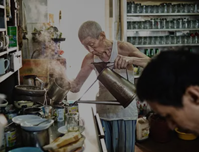

SINCE 2019
Krossiant started with a simple idea —
what if French croissants and Malaysian
kopi can live in the same plate?

Krossiant started with a simple idea —
what if French croissants and Malaysian
kopi can live in the same plate?
Our team brings together Malaysian kopitiam
culture and French baking.
Each team member has a clear role in the café.
We focus on making good coffee and fresh pastries.
The team works closely to ensure quality and
consistency.
We care about customer comfort and friendly
service.
Our goal is to create a warm and welcoming café
experience.